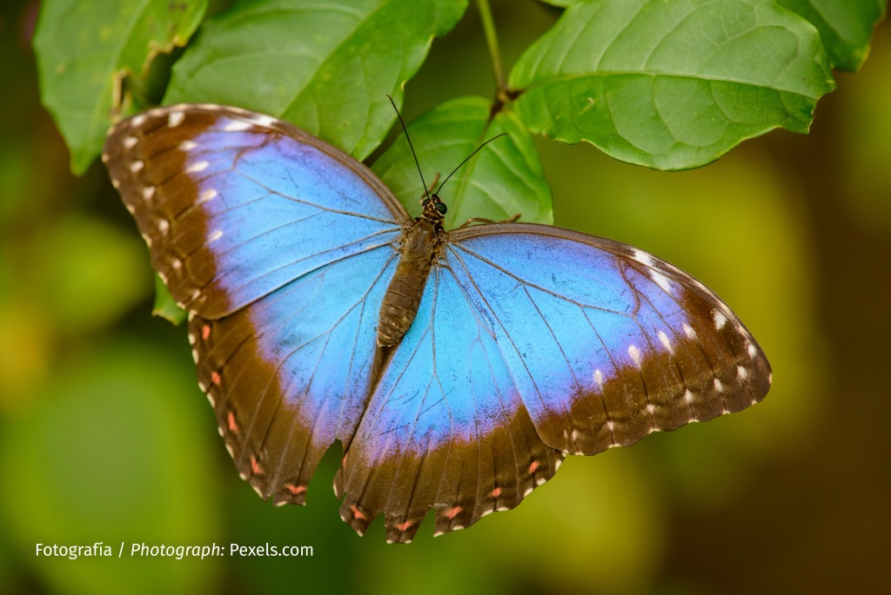

La mariposa Morpho es un lepidóptero de gran tamaño, caracterizado por sus llamativas alas de color azul metálico e iridiscente, producido por estructuras microscópicas de sus escamas. Habita principalmente en bosques tropicales de Centro y Sudamérica. Sus alas presentan tonalidades marrones en el reverso, con manchas circulares llamadas ocelos, que cumplen una función defensiva frente a los depredadores.